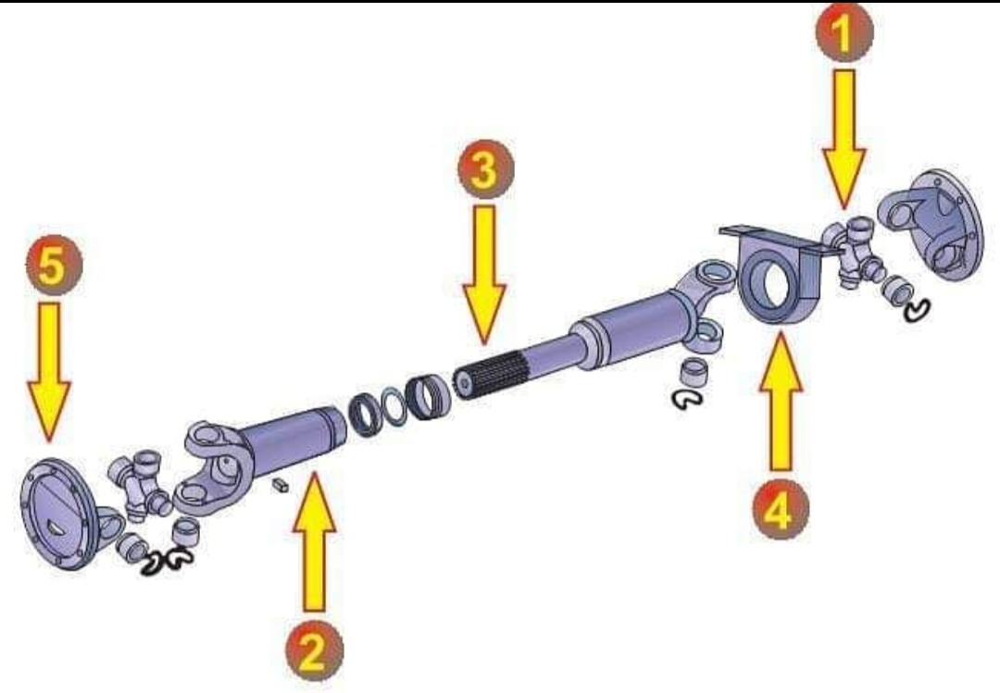
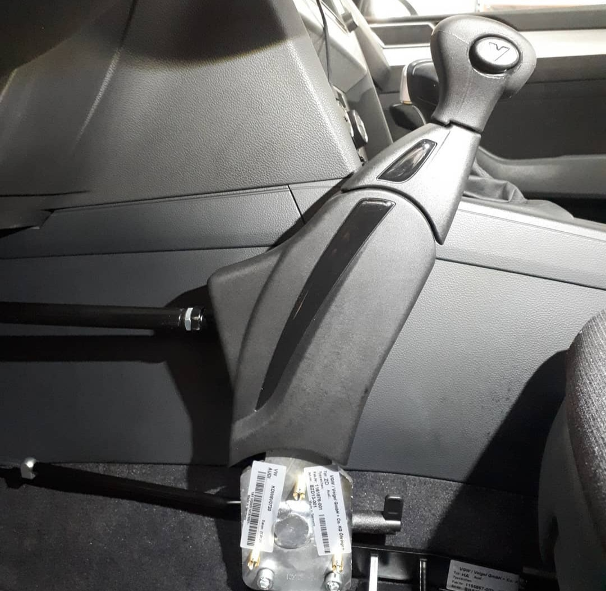
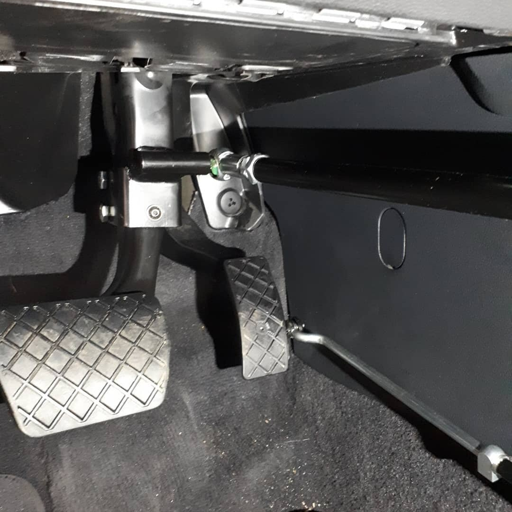

Proizvodnja spona i krajnika
Specijalizirani za proizvodnju upravljačkih i centralnih spona te krajnika za kamione, autobuse, traktore, viljuškare, građevinske strojeve, terenska vozila i autodizalice. Također servisiramo ramena, vilice i spone terenskih i osobnih vozila.
Reparatura kardana
Osiguravamo brzu i efikasnu reparaturu kardana za sve vrste vozila, uključujući poljoprivredne i građevinske strojeve. Dijelovi koji se koriste za reparaturu i/ili izradu novih kardaskih vratila su dijelovi prve ugradnje (OE produkcije). Za sve tipove teretnoga programa, građevinskih storjeva, brodskih kardana i željeznicu.
Ugradnja udvojenih komandi
Ugradnja udvojenih komandi za autoškole sa strane instruktora, te ugradnja ručnih komandi gasa i kočnice za osobe sa invalitditetom.
 Servis za transportni promet
Nudimo usluge za vozila u transportnom prometu, uključujući redovite preglede i popravke kako bi se osigurala njihova dugovječnost i sigurnost na cesti. U našem servisu vršimo uslugu demontaže i montaže prozvedenih dijelova iz našeh proizvodnog programa.
Pogon za obradu metala
Kroz razvoj i tehnološki napredak društva javljaju se i potrebe za novim proizvodima, a koji zahtijevaju i nove načine njihove izrade. Od prve industrijske revolucije pa sve do danas, alatni strojevi za proizvodnju i obradu metala više puta su se mijenjali. Unatoč tome, temeljni principi ostali su isti.
Strojna obrada metala se tako može podijeliti na dvije kategorije:
- Strojna obrada odvajanjem čestica pomoću strojeva s definiranom geometrijom alata pomoću strojeva bez definirane geometrije alata
- Strojna obrada bez odvajanja čestica hladno oblikovanje toplo oblikovanje